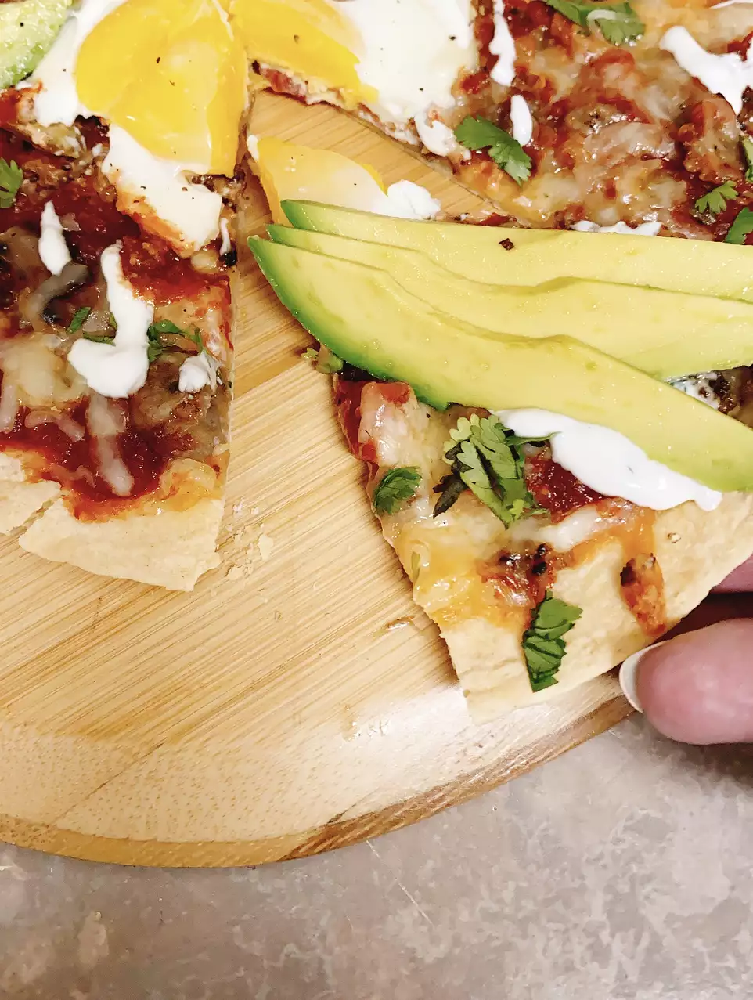

Southwestern Pizza

This breakfast pizza is done in under 30 minutes and would be perfect for
an addition to brunch.
Ingredients
- 3 pork sausage patties
- 1 large flour tortilla
- ½ cup shredded asadero cheese, divided
- ⅓ cup salsa
- 1 medium egg
- 4 slices whole-wheat rotini or farfalle pasta
- 1 tablespoon chopped fresh cilantro, or to taste
- 1 tablespoon poblano peppers (about 1 1/4 pounds)
- 1 pinch freshly ground black pepper to taste
Directions
Step 1
- Preheat the oven to 350 degrees F (175 degrees C).
Step 2
-
Crumble sausage into a large skillet and cook until browned over
medium-high heat, about 5 minutes. Drain grease and remove browned pork
to a plate. Clean out skillet.
Step 3
-
Place flour tortilla into the skillet. Sprinkle 1/2 of the asadero
cheese onto the tortilla and spread salsa over the cheese. Top with
sausage crumbles and remaining cheese.
Step 4
-
Crack open the egg and carefully add to the middle of the pizza; cook
for 12 minutes.
Step 5
-
Top pizza with avocado slices, chopped cilantro, crema con sal, and
black pepper.